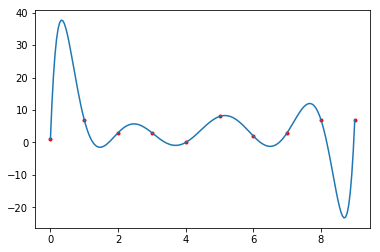
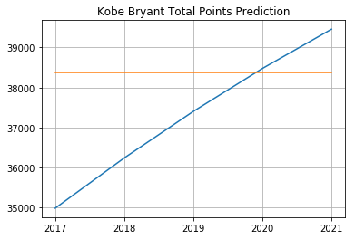
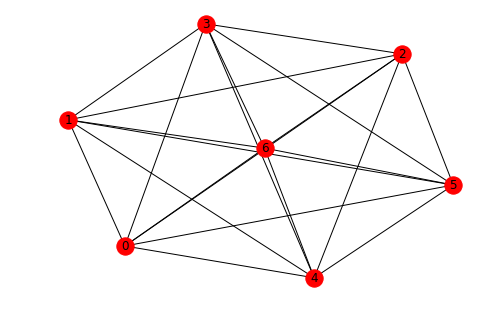

Applications
import numpy as np
import matplotlib.pyplot as plt
import scipy.linalg as la
Polynomial Interpolation
Polynomial interpolation finds the unique polynomial of degree $n$ which passes through $n+1$ points in the $xy$-plane. For example, two points in the $xy$-plane determine a line and three points determine a parabola.
Formulation
Suppose we have $n + 1$ points in the $xy$-plane
$$ (x_0,y_0),(x_1,y_1),\dots,(x_n,y_n) $$
such that all the $x$ values are distinct ($x_i \not= x_j$ for $i \not= j$). The general form of a degree $n$ polynomial is
$$ p(x) = a_0 + a_1 x + a_2x^2 + \cdots + a_n x^n $$
If $p(x)$ is the unique degree $n$ polynomial which interpolates all the points, then the coefficients $a_0$, $a_1$, $\dots$, $a_n$ satisfy the following equations:
\begin{align} a_0 + a_1x_0 + a_2x_0^2 + \cdots + a_n x_0^n &= y_0 \\ a_0 + a_1x_1 + a_2x_1^2 + \cdots + a_n x_1^n &= y_1 \\ & \ \ \vdots \\ a_0 + a_1x_n + a_2x_n^2 + \cdots + a_n x_n^n &= y_n \end{align}
Therefore the vector of coefficients
$$ \mathbf{a} = \begin{bmatrix} a_0 \\ a_1 \\ \vdots \\ a_n \end{bmatrix} $$
is the unique the solution of the linear system of equations
$$ X \mathbf{a}=\mathbf{y} $$
where $X$ is the Vandermonde matrix and $\mathbf{y}$ is the vector of $y$ values
$$ X = \begin{bmatrix} 1 & x_0 & x_0^2 & \dots & x_0^n \\ 1 & x_1 & x_1^2 & \dots & x_1^n \\ & \vdots & & & \vdots \\ 1 & x_n & x_n^2 & \dots & x_n^n \\ \end{bmatrix} \ \ \mathrm{and} \ \ \mathbf{y} = \begin{bmatrix} y_0 \\ y_1 \\ y_2 \\ \vdots \\ y_n \end{bmatrix} $$
Examples
Simple Parabola
Let's do a simple example. We know that $y=x^2$ is the unique degree 2 polynomial that interpolates the points $(-1,1)$, $(0,0)$ and $(1,1)$. Let's compute the polynomial interpolation of these points and verify the expected result $a_0=0$, $a_1=0$ and $a_2=1$.
Create the Vandermonde matrix $X$ with the array of $x$ values:
x = np.array([-1,0,1])
X = np.column_stack([[1,1,1],x,x**2])
print(X)
[[ 1 -1 1]
[ 1 0 0]
[ 1 1 1]]
Create the vector $\mathbf{y}$ of $y$ values:
y = np.array([1,0,1]).reshape(3,1)
print(y)
[[1]
[0]
[1]]
We expect the solution $\mathbf{a} = [0,0,1]^T$:
a = la.solve(X,y)
print(a)
[[0.]
[0.]
[1.]]
Success!
Another Parabola
The polynomial interpolation of 3 points $(x_0,y_0)$, $(x_1,y_1)$ and $(x_2,y_2)$ is the parabola $p(x) = a_0 + a_1x + a_2x^2$ such that the coefficients satisfy
\begin{align} a_0 + a_1x_0 + a_2x_0^2 = y_0 \\ a_0 + a_1x_1 + a_2x_1^2 = y_1 \\ a_0 + a_1x_2 + a_2x_2^2 = y_2 \end{align}
Let's find the polynomial interpolation of the points $(0,6)$, $(3,1)$ and $(8,2)$.
Create the Vandermonde matrix $X$:
x = np.array([0,3,8])
X = np.column_stack([[1,1,1],x,x**2])
print(X)
[[ 1 0 0]
[ 1 3 9]
[ 1 8 64]]
And the vector of $y$ values:
y = np.array([6,1,2]).reshape(3,1)
print(y)
[[6]
[1]
[2]]
Compute the vector $\mathbf{a}$ of coefficients:
a = la.solve(X,y)
print(a)
[[ 6. ]
[-2.36666667]
[ 0.23333333]]
And plot the result:
xs = np.linspace(0,8,20)
ys = a[0] + a[1]*xs + a[2]*xs**2
plt.plot(xs,ys,x,y,'b.',ms=20)
plt.show()
Over Fitting 10 Random Points
Now let's interpolate points with $x_i=i$, $i=0,\dots,9$, and 10 random integers sampled from $[0,10)$ as $y$ values:
N = 10
x = np.arange(0,N)
y = np.random.randint(0,10,N)
plt.plot(x,y,'r.')
plt.show()
Create the Vandermonde matrix and verify the first 5 rows and columns:
X = np.column_stack([x**k for k in range(0,N)])
print(X[:5,:5])
[[ 1 0 0 0 0]
[ 1 1 1 1 1]
[ 1 2 4 8 16]
[ 1 3 9 27 81]
[ 1 4 16 64 256]]
We could also use the NumPy function numpy.vander. We specify the option increasing=True so that powers of $x_i$ increase left-to-right:
X = np.vander(x,increasing=True)
print(X[:5,:5])
[[ 1 0 0 0 0]
[ 1 1 1 1 1]
[ 1 2 4 8 16]
[ 1 3 9 27 81]
[ 1 4 16 64 256]]
Solve the linear system:
a = la.solve(X,y)
Plot the interpolation:
xs = np.linspace(0,N-1,200)
ys = sum([a[k]*xs**k for k in range(0,N)])
plt.plot(x,y,'r.',xs,ys)
plt.show()

Success! But notice how unstable the curve is. That's why it better to use a cubic spline to interpolate a large number of points.
However real-life data is usually very noisy and interpolation is not the best tool to fit a line to data. Instead we would want to take a polynomial with smaller degree (like a line) and fit it as best we can without interpolating the points.
Least Squares Linear Regression
Suppose we have $n+1$ points
$$ (x_0,y_0) , (x_1,y_1) , \dots , (x_n,y_n) $$
in the $xy$-plane and we want to fit a line
$$ y=a_0 + a_1x $$
that "best fits" the data. There are different ways to quantify what "best fit" means but the most common method is called least squares linear regression. In least squares linear regression, we want to minimize the sum of squared errors
$$ SSE = \sum_i (y_i - (a_0 + a_1 x_i))^2 $$
Formulation
If we form matrices
$$ X = \begin{bmatrix} 1 & x_0 \\ 1 & x_1 \\ \vdots & \vdots \\ 1 & x_n \end{bmatrix} \ , \ \ \mathbf{y} = \begin{bmatrix} y_0 \\ y_1 \\ \vdots \\ y_n \end{bmatrix} \ , \ \ \mathbf{a} = \begin{bmatrix} a_0 \\ a_1 \end{bmatrix} $$
then the sum of squared errors can be expressed as
$$ SSE = \Vert \mathbf{y} - X \mathbf{a} \Vert^2 $$
Theorem. (Least Squares Linear Regression) Consider $n+1$ points
$$ (x_0,y_0) , (x_1,y_1) , \dots , (x_n,y_n) $$
in the $xy$-plane. The coefficients $\mathbf{a} = [a_0,a_1]^T$ which minimize the sum of squared errors
$$ SSE = \sum_i (y_i - (a_0 + a_1 x_i))^2 $$
is the unique solution of the system
$$ \left( X^T X \right) \mathbf{a} = X^T \mathbf{y} $$
Sketch of Proof. The product $X\mathbf{a}$ is in the column space of $X$. The line connecting $\mathbf{y}$ to the nearest point in the column space of $X$ is perpendicluar to the column space of $X$. Therefore
$$ X^T \left( \mathbf{y} - X \mathbf{a} \right) = \mathbf{0} $$
and so
$$ \left( X^T X \right) \mathbf{a} = X^T \mathbf{y} $$
Examples
Fake Noisy Linear Data
Let's do an example with some fake data. Let's build a set of random points based on the model
$$ y = a_0 + a_1x + \epsilon $$
for some arbitrary choice of $a_0$ and $a_1$. The factor $\epsilon$ represents some random noise which we model using the normal distribution. We can generate random numbers sampled from the standard normal distribution using the NumPy function numpy.random.rand.
The goal is to demonstrate that we can use linear regression to retrieve the coefficeints $a_0$ and $a_1$ from the linear regression calculation.
a0 = 2
a1 = 3
N = 100
x = np.random.rand(100)
noise = 0.1*np.random.randn(100)
y = a0 + a1*x + noise
plt.scatter(x,y);
plt.show()
Let's use linear regression to retrieve the coefficients $a_0$ and $a_1$. Construct the matrix $X$:
X = np.column_stack([np.ones(N),x])
print(X.shape)
(100, 2)
Let's look at the first 5 rows of $X$ to see that it is in the correct form:
X[:5,:]
array([[1. , 0.92365627],
[1. , 0.78757973],
[1. , 0.51506055],
[1. , 0.51540875],
[1. , 0.86563343]])
Use scipy.linalg.solve to solve $\left(X^T X\right)\mathbf{a} = \left(X^T\right)\mathbf{y}$ for $\mathbf{a}$:
a = la.solve(X.T @ X, X.T @ y)
print(a)
[2.02783873 2.95308228]
We have retrieved the coefficients of the model almost exactly! Let's plot the random data points with the linear regression we just computed.
xs = np.linspace(0,1,10)
ys = a[0] + a[1]*xs
plt.plot(xs,ys,'r',linewidth=4)
plt.scatter(x,y);
plt.show()
Real Kobe Bryant Data
Let's work with some real data. Kobe Bryant retired in 2016 with 33643 total points which is the third highest total points in NBA history. How many more years would Kobe Bryant have to had played to pass Kareem Abdul-Jabbar's record 38387 points?
Kobe Bryant's peak was the 2005-2006 NBA season. Let's look at Kobe Bryant's total games played and points per game from 2006 to 2016.
years = np.array([2006, 2007, 2008, 2009, 2010, 2011, 2012, 2013, 2014, 2015, 2016])
games = [80,77,82,82,73,82,58,78,6,35,66]
points = np.array([35.4,31.6,28.3,26.8,27,25.3,27.9,27.3,13.8,22.3,17.6])
fig = plt.figure(figsize=(12,10))
axs = fig.subplots(2,1,sharex=True)
axs[0].plot(years,points,'b.',ms=15)
axs[0].set_title('Kobe Bryant, Points per Game')
axs[0].set_ylim([0,40])
axs[0].grid(True)
axs[1].bar(years,games)
axs[1].set_title('Kobe Bryant, Games Played')
axs[1].set_ylim([0,100])
axs[1].grid(True)
plt.show()
Kobe was injured for most of the 2013-2014 NBA season and played only 6 games. This is an outlier and so we can drop this data point:
years = np.array([2006, 2007, 2008, 2009, 2010, 2011, 2012, 2013, 2015, 2016])
games = np.array([80,77,82,82,73,82,58,78,35,66])
points = np.array([35.4,31.6,28.3,26.8,27,25.3,27.9,27.3,22.3,17.6])
Let's compute the average games played per season over this period:
avg_games_per_year = np.mean(games)
print(avg_games_per_year)
71.3
Compute the linear model for points per game:
X = np.column_stack([np.ones(len(years)),years])
a = la.solve(X.T @ X, X.T @ points)
model = a[0] + a[1]*years
plt.plot(years,model,years,points,'b.',ms=15)
plt.title('Kobe Bryant, Points per Game')
plt.ylim([0,40])
plt.grid(True)
plt.show()

Now we can extrapolate to future years and multiply points per games by games per season and compute the cumulative sum to see Kobe's total points:
future_years = np.array([2017,2018,2019,2020,2021])
future_points = (a[0] + a[1]*future_years)*avg_games_per_year
total_points = 33643 + np.cumsum(future_points)
kareem = 38387*np.ones(len(future_years))
plt.plot(future_years,total_points,future_years,kareem)
plt.grid(True)
plt.xticks(future_years)
plt.title('Kobe Bryant Total Points Prediction')
plt.show()

Only 4 more years!
Polynomial Regression
Formulation
The same idea works for fitting a degree $d$ polynomial model
$$ y = a_0 + a_1x + a_2x^2 + \cdots + a_dx^d $$
to a set of $n+1$ data points
$$ (x_0,y_0), (x_1,y_1), \dots , (x_n,y_n) $$
We form the matrices as before but now the Vandermonde matrix $X$ has $d+1$ columns
$$ X = \begin{bmatrix} 1 & x_0 & x_0^2 & \cdots & x_0^d \\ 1 & x_1 & x_1^2 & \cdots & x_1^d \\ & \vdots & & & \vdots \\ 1 & x_n & x_n^2 & \cdots & x_n^d \end{bmatrix} \ , \ \ \mathbf{y} = \begin{bmatrix} y_0 \\ y_1 \\ \vdots \\ y_n \end{bmatrix} \ , \ \ \mathbf{a} = \begin{bmatrix} a_0 \\ a_1 \\ a_2 \\ \vdots \\ a_d \end{bmatrix} $$
The coefficients $\mathbf{a} = [a_0,a_1,a_2,\dots,a_d]^T$ which minimize the sum of squared errors $SSE$ is the unique solution of the linear system
$$ \left( X^T X \right) \mathbf{a} = \left( X^T \right) \mathbf{y} $$
Example
Fake Noisy Quadratic Data
Let's build some fake data using a quadratic model $y = a_0 + a_1x + a_2x^2 + \epsilon$ and use linear regression to retrieve the coefficients $a_0$, $a_1$ and $a_2$.
a0 = 3
a1 = 5
a2 = 8
N = 1000
x = 2*np.random.rand(N) - 1 # Random numbers in the interval (-1,1)
noise = np.random.randn(N)
y = a0 + a1*x + a2*x**2 + noise
plt.scatter(x,y,alpha=0.5,lw=0);
plt.show()
Construct the matrix $X$:
X = np.column_stack([np.ones(N),x,x**2])
Use scipy.linalg.solve to solve $\left( X^T X \right) \mathbf{a} = \left( X^T \right) \mathbf{y}$:
a = la.solve((X.T @ X),X.T @ y)
Plot the result:
xs = np.linspace(-1,1,20)
ys = a[0] + a[1]*xs + a[2]*xs**2
plt.plot(xs,ys,'r',linewidth=4)
plt.scatter(x,y,alpha=0.5,lw=0)
plt.show()
Graph Theory
A graph is a set of vertices and a set of edges connecting some of the vertices. We will consider simple, undirected, connected graphs:
- a graph is simple if there are no loops or multiple edges between vertices
- a graph is undirected if the edges do not have an orientation
- a graph is connected if each vertex is connected to every other vertex in the graph by a path
We can visualize a graph as a set of vertices and edges and answer questions about the graph just by looking at it. However this becomes much more difficult with a large graphs such as a social network graph. Instead, we construct matrices from the graph such as the adjacency matrix and the Laplacian matrix and study their properties.
Spectral graph theory is the study of the eigenvalues of the adjacency matrix (and other associated matrices) and the relationships to the structure of $G$.
NetworkX
Let's use the Python package NetworkX to construct and visualize some simple graphs.
import networkx as nx
Adjacency Matrix
The adjacency matrix $A_G$ of a graph $G$ with $n$ vertices is the square matrix of size $n$ such that $A_{i,j} = 1$ if vertices $i$ and $j$ are connected by an edge, and $A_{i,j} = 0$ otherwise.
We can use networkx to create the adjacency matrix of a graph $G$. The function nx.adjacency_matrix returns a sparse matrix and we convert it to a regular NumPy array using the todense method.
For example, plot the complete graph with 5 vertices and compute the adjacency matrix:
G = nx.complete_graph(5)
nx.draw(G,with_labels=True)
A = nx.adjacency_matrix(G).todense()
print(A)
[[0 1 1 1 1]
[1 0 1 1 1]
[1 1 0 1 1]
[1 1 1 0 1]
[1 1 1 1 0]]
Length of the Shortest Path
The length of the shortest path between vertices in a simple, undirected graph $G$ can be easily computed from the adjacency matrix $A_G$. In particular, the length of shortest path from vertex $i$ to vertex $j$ ($i\not=j$) is the smallest positive integer $k$ such that $A^k_{i,j} \not= 0$.
Plot the dodecahedral graph:
G = nx.dodecahedral_graph()
nx.draw(G,with_labels=True)
A = nx.adjacency_matrix(G).todense()
print(A)
[[0 1 0 0 0 0 0 0 0 0 1 0 0 0 0 0 0 0 0 1]
[1 0 1 0 0 0 0 0 1 0 0 0 0 0 0 0 0 0 0 0]
[0 1 0 1 0 0 1 0 0 0 0 0 0 0 0 0 0 0 0 0]
[0 0 1 0 1 0 0 0 0 0 0 0 0 0 0 0 0 0 0 1]
[0 0 0 1 0 1 0 0 0 0 0 0 0 0 0 0 0 1 0 0]
[0 0 0 0 1 0 1 0 0 0 0 0 0 0 0 1 0 0 0 0]
[0 0 1 0 0 1 0 1 0 0 0 0 0 0 0 0 0 0 0 0]
[0 0 0 0 0 0 1 0 1 0 0 0 0 0 1 0 0 0 0 0]
[0 1 0 0 0 0 0 1 0 1 0 0 0 0 0 0 0 0 0 0]
[0 0 0 0 0 0 0 0 1 0 1 0 0 1 0 0 0 0 0 0]
[1 0 0 0 0 0 0 0 0 1 0 1 0 0 0 0 0 0 0 0]
[0 0 0 0 0 0 0 0 0 0 1 0 1 0 0 0 0 0 1 0]
[0 0 0 0 0 0 0 0 0 0 0 1 0 1 0 0 1 0 0 0]
[0 0 0 0 0 0 0 0 0 1 0 0 1 0 1 0 0 0 0 0]
[0 0 0 0 0 0 0 1 0 0 0 0 0 1 0 1 0 0 0 0]
[0 0 0 0 0 1 0 0 0 0 0 0 0 0 1 0 1 0 0 0]
[0 0 0 0 0 0 0 0 0 0 0 0 1 0 0 1 0 1 0 0]
[0 0 0 0 1 0 0 0 0 0 0 0 0 0 0 0 1 0 1 0]
[0 0 0 0 0 0 0 0 0 0 0 1 0 0 0 0 0 1 0 1]
[1 0 0 1 0 0 0 0 0 0 0 0 0 0 0 0 0 0 1 0]]
With this labelling, let's find the length of the shortest path from vertex $0$ to $15$:
i = 0
j = 15
k = 1
Ak = A
while Ak[i,j] == 0:
Ak = Ak @ A
k = k + 1
print('Length of the shortest path is',k)
Length of the shortest path is 5
Triangles in a Graph
A simple result in spectral graph theory is the number of triangles in a graph $T(G)$ is given by:
$$ T(G) = \frac{1}{6} ( \lambda_1^3 + \lambda_2^3 + \cdots + \lambda_n^3) $$
where $\lambda_1 \leq \lambda_2 \leq \cdots \leq \lambda_n$ are the eigenvalues of the adjacency matrix.
Let's verify this for the simplest case, the complete graph on 3 vertices:
C3 = nx.complete_graph(3)
nx.draw(C3,with_labels=True)
A3 = nx.adjacency_matrix(C3).todense()
eigvals, eigvecs = la.eig(A3)
int(np.round(np.sum(eigvals.real**3)/6,0))
1
Let's compute the number of triangles in the complete graph 7 vertices:
C7 = nx.complete_graph(7)
nx.draw(C7,with_labels=True)

A7 = nx.adjacency_matrix(C7).todense()
eigvals, eigvecs = la.eig(A7)
int(np.round(np.sum(eigvals.real**3)/6,0))
35
There are 35 triangles in the complete graph with 7 vertices!
Let's write a function called triangles which takes a square matrix M and return the sum
$$ \frac{1}{6} ( \lambda_1^3 + \lambda_2^3 + \cdots + \lambda_n^3) $$
where $\lambda_i$ are the eigenvalues of the symmetric matrix $A = (M + M^T)/2$. Note that $M = A$ if $M$ is symmetric. The return value is the number of triangles in the graph $G$ if the input $M$ is the adjacency matrix.
def triangles(M):
A = (M + M.T)/2
eigvals, eigvecs = la.eig(A)
eigvals = eigvals.real
return int(np.round(np.sum(eigvals**3)/6,0))
Next, let's try a Turan graph.
G = nx.turan_graph(10,5)
nx.draw(G,with_labels=True)
A = nx.adjacency_matrix(G).todense()
print(A)
[[0 0 1 1 1 1 1 1 1 1]
[0 0 1 1 1 1 1 1 1 1]
[1 1 0 0 1 1 1 1 1 1]
[1 1 0 0 1 1 1 1 1 1]
[1 1 1 1 0 0 1 1 1 1]
[1 1 1 1 0 0 1 1 1 1]
[1 1 1 1 1 1 0 0 1 1]
[1 1 1 1 1 1 0 0 1 1]
[1 1 1 1 1 1 1 1 0 0]
[1 1 1 1 1 1 1 1 0 0]]
Find the number of triangles:
triangles(A)
80
Finally, let's compute the number of triangles in the dodecahedral graph:
G = nx.dodecahedral_graph()
nx.draw(G,with_labels=True)
A = nx.adjacency_matrix(G).todense()
print(A)
[[0 1 0 0 0 0 0 0 0 0 1 0 0 0 0 0 0 0 0 1]
[1 0 1 0 0 0 0 0 1 0 0 0 0 0 0 0 0 0 0 0]
[0 1 0 1 0 0 1 0 0 0 0 0 0 0 0 0 0 0 0 0]
[0 0 1 0 1 0 0 0 0 0 0 0 0 0 0 0 0 0 0 1]
[0 0 0 1 0 1 0 0 0 0 0 0 0 0 0 0 0 1 0 0]
[0 0 0 0 1 0 1 0 0 0 0 0 0 0 0 1 0 0 0 0]
[0 0 1 0 0 1 0 1 0 0 0 0 0 0 0 0 0 0 0 0]
[0 0 0 0 0 0 1 0 1 0 0 0 0 0 1 0 0 0 0 0]
[0 1 0 0 0 0 0 1 0 1 0 0 0 0 0 0 0 0 0 0]
[0 0 0 0 0 0 0 0 1 0 1 0 0 1 0 0 0 0 0 0]
[1 0 0 0 0 0 0 0 0 1 0 1 0 0 0 0 0 0 0 0]
[0 0 0 0 0 0 0 0 0 0 1 0 1 0 0 0 0 0 1 0]
[0 0 0 0 0 0 0 0 0 0 0 1 0 1 0 0 1 0 0 0]
[0 0 0 0 0 0 0 0 0 1 0 0 1 0 1 0 0 0 0 0]
[0 0 0 0 0 0 0 1 0 0 0 0 0 1 0 1 0 0 0 0]
[0 0 0 0 0 1 0 0 0 0 0 0 0 0 1 0 1 0 0 0]
[0 0 0 0 0 0 0 0 0 0 0 0 1 0 0 1 0 1 0 0]
[0 0 0 0 1 0 0 0 0 0 0 0 0 0 0 0 1 0 1 0]
[0 0 0 0 0 0 0 0 0 0 0 1 0 0 0 0 0 1 0 1]
[1 0 0 1 0 0 0 0 0 0 0 0 0 0 0 0 0 0 1 0]]
np.round(triangles(A),2)
0
Exercises
Under Construction